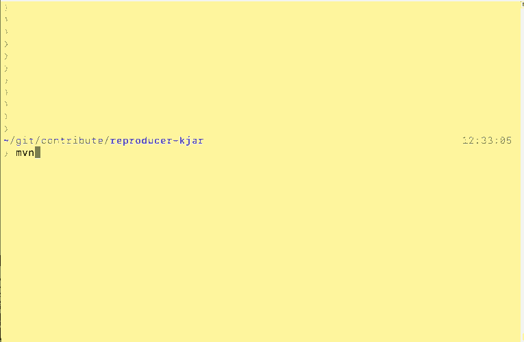
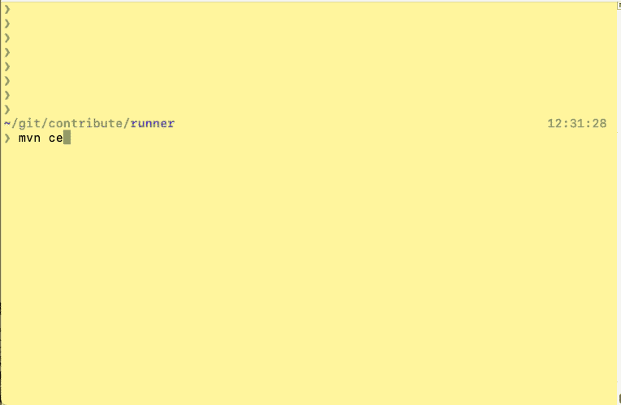

How to start contributing to Drools Executable Model
What is the Executable Model?
The Executable Model is a new way to execute business rules in Drools.
It’s based on a Java representation of the rule structure that provides a few advantages such as faster startup time and better memory allocation at runtime.
You can check out the details in the Drools Documentation or in other blog posts such as Mario’s.
KJARs built with the kie-maven-plugin have the Executable Model enabled since 7.33.0.Final by default and it’s the main technology underneath Kogito.
With the "Executable Model Compiler", a module you can find in the drools-model-compiler directory, DRL files are transformed into a Java DSL.
How to start contributing
Drools is a really big open source project, and finding the best way to contribute to it might not be easy.
Luckily, the Executable Model Compiler is a good way to start, for various reasons:
- It’s a fairly new project (as today it’s been more or less three years since the inception)
- It doesn’t require deep understanding of the Drools’ internal algorithm, PHREAK
- There always is a former counterpart to verify the code against
Regarding the third point, we want Drools to behave in the exact same way while using the former runtime (also called DRL) and the new one (called PatternDSL).
Contributing: showing a problem
Imagine that you’re interested in contributing to Drools, what should you do when you find a problem and you think it’s related to the Executable Model?
Firstly we should understand where the problem is in Drools and if it’s eventually related to the Executable Model.
To do that, we need to create the smallest piece of code that shows the problem: this is what we called a "bug reproducer" (also just "reproducer").
If you provide a bug report to Zulip, mailing lists or Stack Overflow
the team will ask you to create such reproducer. There are two ways to do it:
1) If you’re familiar with the Drools GitHub repository you can write the test directly in your own fork of the original repository and create a PR against it.
This is probably the best way to proceed, as it allows all the Drools’ developers to check the problem faster
2) Create another separate project that shows the problem
Method #1: create a reproducer in drools.git
Start by building the Drools project reading the Drools Source Code page.
You can either decide to build it using droolsjbpm-build-bootstrap or building only the Drools module with mvn clean install. The second one is definitely faster.
Once you have the project up and running you can open it with your preferred IDE and take a look at the tests in the drools-model-compiler module, for example org.drools.modelcompiler.CompilerTest.
If you run these tests you’ll see they’re executed twice, once against the DRL mode and the other against the PatternDSL. It’s important that the tests run in both ways. If you see a difference in the execution, please create a PR. And if you want to fix it on your own, try – we love to see new contributors.
Method #2: create a self contained project
Let’s use the Drools archetype and verify that your small reproducer is working against Drools Legacy.
Start by creating a KJAR using the Maven Archetype, modify the rules and the test to verify everything is working accordingly. The default archetype will run the test against the DRL mode.
Change the generated model to build an executable model KJAR. To do so, switch in the pom.xml from drools-engine-classic to drools-engine. Also add the drools-model-compiler dependency.
Compile the project using maven and the command line. Use
mvn clean install -DskipTests=true
as it’ll try run the tests using the classic engine but we don’t have the drools-mvel dependency in the class path anymore.

Verify the Executable Model has been built in the KJAR, you can for example using this command to view the content inside the KJAR:
jar -tf target/name_of_the_kjar.jar
You will see all the Executable Model classes under and the drools-model file.
Another way to do it is to check the maven log for this phrase:
[INFO] Found 7 generated files in Canonical Model
[INFO] Generating /Users/lmolteni/git/contribute/reproducer-kjar/target/generated-sources/drools-model-compiler/main/java/./org/example/P41/LambdaExtractor41A2683D222972683028514525A5437B.java
...
Create another project called runner that has the original project as a dependency in the Maven pom.xml.
The same archetype can be used again, but you have to change a few things
- Remove all the classes in
src/main/java - Remove the DRL files, as this project only consumes KJARs
- Remove the
kmodule.xmlfile - Remove the
kie-maven-pluginfrom the build. Again, we don’t want to build KJARs here, only to use them. - Switch in the
pom.xmlfromdrools-engine-classictodrools-engine. - Remove the
kjarpackaging in pom.xml - Add the original KJAR dependency
<dependency>
<groupId>org.example</groupId>
<artifactId>reproducer-kjar</artifactId>
<version>1.0-SNAPSHOT</version>
</dependency>- Move the test from the original reproducer to this module
- Never call
kContainer.verify();while using Executable Model KJARs as this will retrigger the build
Run the test. This time the test will run using the Executable Model.

You can see it because there will be this line in the logs
2021-06-15 11:32:29,576 INFO [org.drools.modelcompiler.CanonicalKieModuleProvider] (main) Artifact org.example:reproducer-kjar:1.0-SNAPSHOT has executable modelThis can probably be abstracted in a new archetype, let us know if you’re interested and we can work of it.
Summary
In this article, we saw how to provide a small reproducer to verify an unexpected behaviour in Drools Executable Model and to provide the developers some way to verify the unexpected behaviour.
Please try and contribute to Drools Executable Model!